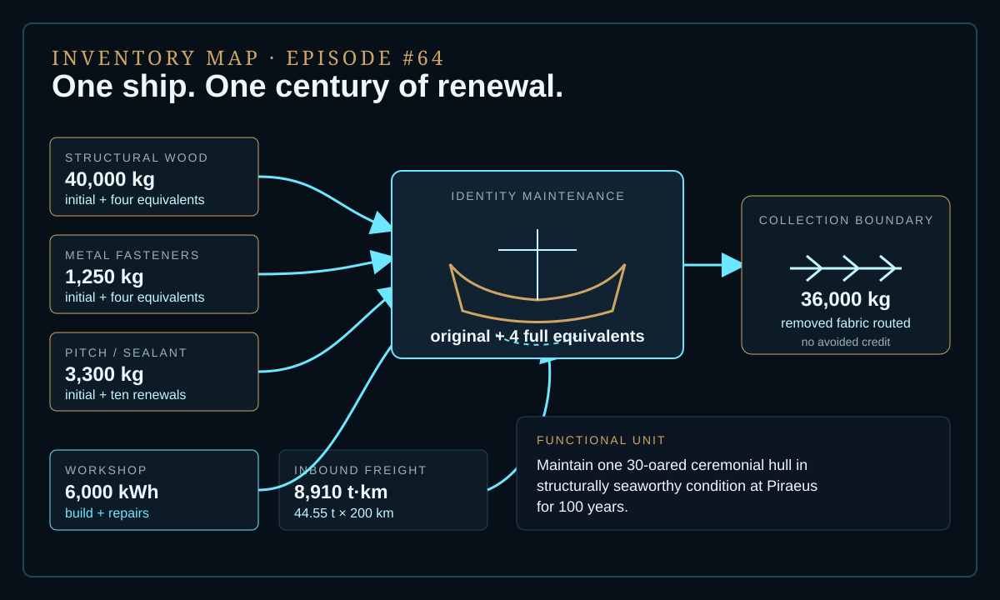
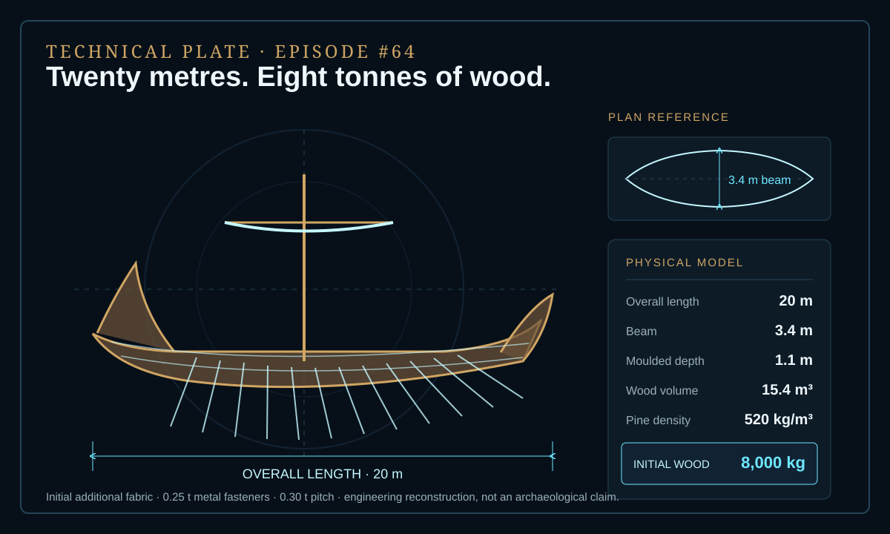
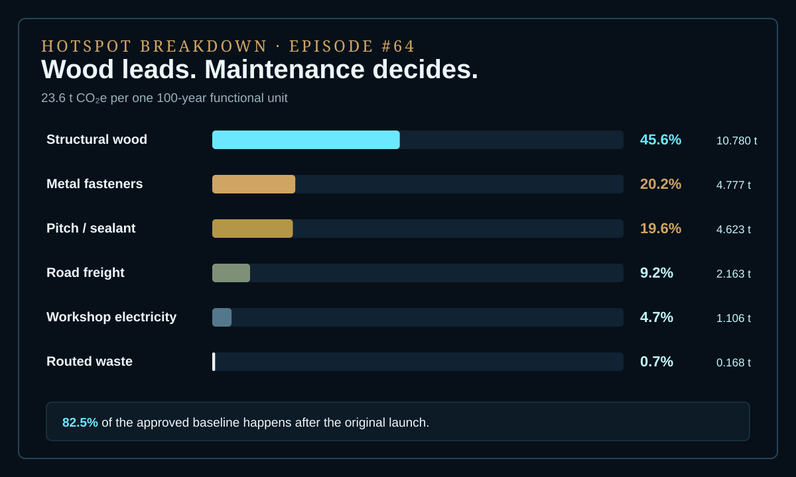

EPISODE #64 · MYTHS & LEGENDS
The Ship of Theseus
When every structural part is replaced, what does it cost to keep the same ship?
THE SUBJECT
One identity. Five hulls of timber.
The approved model follows one recognisable, operable 30-oared ceremonial hull through a century of continuous maintenance at Piraeus. Its form persists while its material fabric changes: the baseline contains the original structure plus four full-equivalent replacements, one every 25 years.
The 20 m length, 3.4 m beam, 1.1 m moulded depth and material bill are an engineering reconstruction for consistency, not an archaeological claim. Material production, initial build, structural repair, inbound road freight and collection or routing of removed fabric are included. Crew, sailing energy, harbour infrastructure, exhibits, visitor travel and avoided burdens remain outside the boundary.
Reconstructed hull
20 m overall length, 3.4 m beam and 1.1 m moulded depth.
Initial fabric
8.00 t structural wood, 0.25 t metal fasteners and 0.30 t pitch.
Century of repair
The original hull plus four full-equivalent structural replacements.
Maintenance dominates
82.5% of the approved baseline footprint occurs after the original launch.
VISUAL MODEL
Identity becomes a maintenance process
The inventory map follows the flows through one century of renewal. The technical plate freezes the reconstructed hull before the replacement schedule is applied.


DETAILED LIFE CYCLE INVENTORY
Five hulls of material across one century
The six approved factors reproduce the 23.6 t CO₂e headline result. Climate contributions below are direct calculations from the activity data and factors disclosed in the approved episode.
| Stage | Component / activity | Activity data | Climate change | Modelling basis |
|---|---|---|---|---|
| Material production | Structural wood | 40,000 kg | 10.780 t CO₂e · 45.6% | Initial fabric plus four full equivalents. DEFRA primary wood: 0.26950416 kg CO₂e/kg. |
| Material production | Metal fasteners | 1,250 kg | 4.777 t CO₂e · 20.2% | Initial fabric plus four full equivalents. DEFRA generic metals proxy: 3.82194858 kg CO₂e/kg. |
| Material production | Pitch / sealant | 3,300 kg | 4.623 t CO₂e · 19.6% | Initial application plus ten renewals. DEFRA mineral-oil proxy: 1.40100000 kg CO₂e/kg. |
| Build and repair | Workshop electricity | 6,000 kWh | 1.106 t CO₂e · 4.7% | Build plus repairs. UK generation + T&D + WTT composite: 0.18436000 kg CO₂e/kWh. |
| Inbound logistics | Road freight | 8,910 t·km | 2.163 t CO₂e · 9.2% | 44.55 t procured material × 200 km. Rigid HGV + WTT: 0.24279000 kg CO₂e/t·km. |
| Collection boundary | Routed removed fabric | 36,000 kg | 0.168 t CO₂e · 0.7% | Removed structural fabric only. DEFRA collection/routing proxy: 0.00465358 kg CO₂e/kg. |
| Approved baseline total | 23.6 t CO₂e | Per 100-year functional unit. | ||
Included
Material production, initial build, structural repair, inbound road freight and collection or routing of removed fabric.
Excluded
Crew, sailing energy, harbour infrastructure, exhibits, visitor travel and avoided burdens.
Boundary rule
The model stops at collection for recycling or combustion. No avoided-production credit is assigned.
Proxy disclosure
UK electricity and rigid-HGV factors are declared geography proxies for the Piraeus reconstruction. Generic metals and mineral oil represent the approved material proxies.
HOTSPOT
Wood leads. Maintenance decides.
Structural wood contributes 45.6%. Metal and pitch add 39.8%, while the century-long replacement process places 82.5% of the total after the original launch.

Main result
23.6 t CO₂e
One structurally seaworthy ceremonial hull maintained for 100 years.
Structural wood
45.6%
The largest material contribution across five full hull equivalents.
Metal + pitch
39.8%
Two smaller flows that together nearly match the wood contribution.
After launch
82.5%
Most of the footprint belongs to keeping the identity alive.
Sensitivity A · Replacement interval
40 years → 17.9 t CO₂e · 28.0 t wood
25 years → 23.6 t CO₂e · 40.0 t wood
Approved baseline.
15 years → 33.7 t CO₂e · 61.3 t wood
Sensitivity B · Timber factor
Re-used timber → 14.4 t CO₂e · −39.1%
0.03854288 kg CO₂e/kg.
Primary timber → 23.6 t CO₂e · reference
0.26950416 kg CO₂e/kg.
1.5× stress test → 29.0 t CO₂e · +22.8%
0.40425624 kg CO₂e/kg; modelled, not published.
Physical interpretation
A faster decay rate increases every replacement-linked flow, not wood alone. The replacement interval therefore changes materials, workshop activity, freight and waste routing together.
Factor interpretation
Changing only the timber factor moves the answer almost as much as changing physical decay. The result depends on both how often the hull is replaced and what kind of timber supply is represented.
THE VERDICT
A ship can keep its name while replacing its footprint.
The same identity requires five hulls of structural material across one century. In this reconstruction, continuity is not a property of matter; it is a maintenance process with a measurable carbon cost.